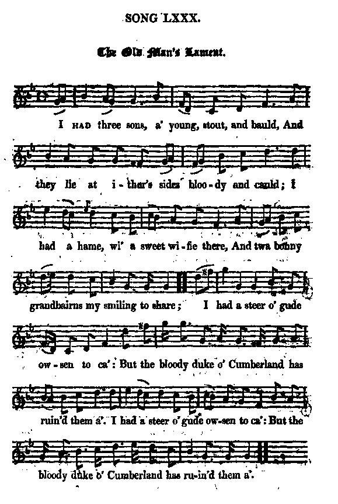

The Old Man's Lament
La Complainte du vieil homme
by/par Allan Cunningham
Tune - Mélodie"The Old Man's Lament"
from Hogg's "Jacobite Relics" 2nd Series N°80 page 138, 1821
Sequenced by Christian Souchon

|
To the tune:
"Is likewise from Cromek ["Remains of Nithsdale and Galloway Song", "The Lamentation of an old man over the ruin of his family", page 179, 1810] and very like what my friend, Allan Cunninghame, might write, at a venture." Hogg in "Jacobite Relics, 2nd series", 1821 Since Cunningham was a friend of his, there is no reason to suppose that the "Shepherd of Ettrick"'s assertion should be unwarranted, though it is not included in Cunningham's collection "Songs of Scotland"! Hogg gives no clue as to the origin of the beautiful tune. |
A propos de la mélodie:
"Ce chant est également tiré du recueil de Cromek ["Remains of Nithsdale and Galloway Song", "The Lamentation of an old man over the ruin of his family", page 179, 1810] et je tendrais à l'imputer à mon ami Allan Cunningham". Hogg in "Jacobite Relics, 2nd series", 1821 Puisque Cunningham était l'un de ses amis, il n'y a pas de raison de supposer qu'il s'agit de la part du "Berger d'Ettrick" d'une hypothèse gratuite, même si ce chant ne se trouve pas dans le recueil de "Chants d'Ecosse" de Cunningham! Hogg ne donne pas d'indice quant à l'origine de la belle mélodie. |

|
THE OLD MAN'S LAMENT
1. I Had three sons, a' young, stout, and bauld, And they lie at ither's sides bloo ydy and cauld; I had a hame, wi' a sweet wifie there, And twa bonny grandbairns my smiling to share ; I had a steer o' gude owsen to ca': But the bloody duke o' Cumberland has ruined them a'. I had a steer o' gude owsen to ca': But the bloody duke o' Cumberland has ruined them a'. 2. Revenge and despair aye by turns weet my e'e; The fa' o' the spoiler I lang for to see. Friendless I lie, and friendless I gang, I've nane but kind Heaven to tell o' my wrang. " Thy auld arm," quo' Heaven, " canna strike down the proud: " I will keep to mysel the avenging thy blood." Source: "The Jacobite Relics of Scotland, being the Songs, Airs and Legends of the Adherents to the House of Stuart" collected by James Hogg, volume II published in Edinburgh by William Blackwood in 1821. |
LA COMPLAINTE DU VIEIL HOMME
1. Les trois fils jeunes et courageux que j'avais Descendirent au tombeau, tous trois, ensanglantés. J'avais une épouse et un foyer accueillant. A mes sourires répondaient deux petits-enfants. J'avais un bel attelage de bœufs vaillants Mais tout cela fut anéanti par Cumberland. J'avais un bel attelage de bœufs vaillants Mais tout cela fut anéanti par Cumberland. 2. Les larmes que je verse expriment ma rancœur! Que vienne la punition de mon vil agresseur! Je suis aussi seul qu'au jour où je suis parti. Hormis le Ciel vers qui je crie, je n'ai plus d'ami. "Ton faible bras ne peut abattre l'arrogant C'est à Moi qu'il devra répondre de ton sang." (Trad. Christian Souchon (c) 2010) |